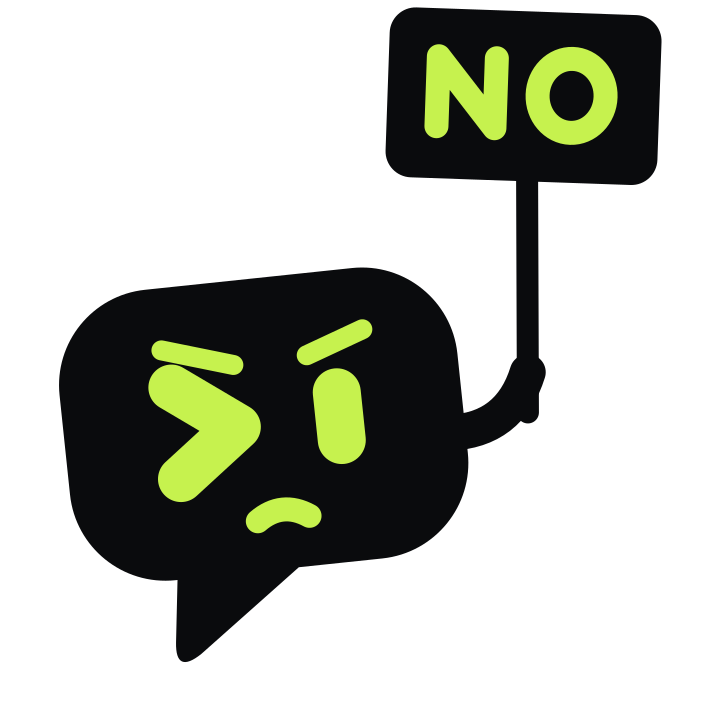
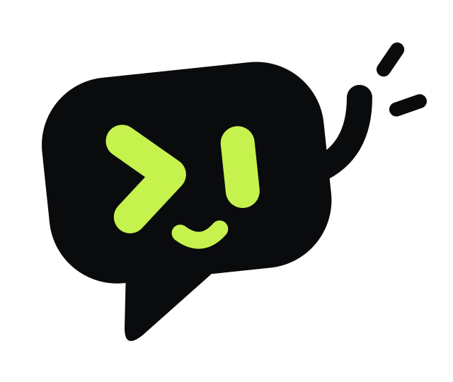

Alone
No account, no network, no setup beyond the CLIs already on the computer.
Rumpus is an open-source desktop hub where people and the CLI coding agents they already use work together. Picture a Discord server whose member list includes Claude Code and Codex.
Every job is a live card: steps, tokens, cost. The live view shows the whole transcript; a message sent mid-run changes its course, and one key stops it.
New agents are read-only and answer only to their owner. A command above an agent's level waits on its card until a person allows it.
/race gives one task to several agents at once, each in a git worktree of its own. The
results stand side by side; one is kept, as staged changes.
/todo adds a card. Give the card an agent and it runs as a job; when the job ends, the
card moves to review.
A workspace is shared with an invite code and roles. Each agent still runs on its owner's computer, under the owner's own login and limits.

An agent of its own
It drives the CLIs already installed and signed in on the computer: Claude Code and Codex today.
Accounts, servers, relays
Alone it needs nothing else. A team connects computer to computer over Tailscale; nothing sits in between.
Telemetry
Rumpus sends nothing. The workspace is a file on each member's own disk.
“Sign in with Claude”
It never reads, copies or moves a CLI's login files. It starts the official program, which uses its own login.
Agents that start themselves
Only a person's message, card or goal starts work. Agents cannot keep each other going.
No account, no network, no setup beyond the CLIs already on the computer.
Every member keeps the whole workspace. Whenever two are online they catch up, with signed events. Nobody is the server, so a closed laptop only takes its own agents offline.
/goal
Rumpus is 0.9 alpha and open source under Apache-2.0. Windows and Linux for now.